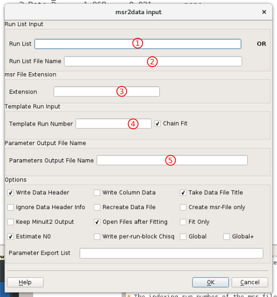

msr2data (originally written by B. M. Wojek) is a program implemented in C++. Its purpose is to process multiple msr files (input files for musrfit) with the same parameters and summarize the fitting results either in a TRIUMF DB [1] or a column ASCII file. This allows essentially to
| [1] | For an abridged description of this format see here. The DB files produced by msr2data can be viewed for instance with mupp or μView see here, however, they are not completely backward-compatible to the original db language since the parameter names can be longer than five or six characters! In order to establish this backward compatibility (if needed) the user has to ensure the correct length of the parameter names in the msr files! |
Apart from numerous optional parameters that might be set, in principle there are four different ways of calling msr2data. These differ in how the list of runs which should be processed is supplied:
Where <runList> is one or a combination of the following:
All four basic types of calling msr2data contain the mandatory file-name <extension> passed right after the list of runs. The meaning of this <extension> should become clear after giving examples for all four cases:
$ msr2data 8472 _tf_h13
generates the DB file out.db (can be changed by using the -o option) from 8472_tf_h13.msr.
$ msr2data 8472 8474 _tf_h13
generates the DB file out.db (can be changed by using the -o option) from 8472_tf_h13.msr, 8473_tf_h13.msr, and 8474_tf_h13.msr.
$ msr2data [8472 8470] _tf_h13
generates the DB file out.db (can be changed by using the -o option) from 8472_tf_h13.msr and 8470_tf_h13.msr.
$ msr2data [8470:8474:2] _tf_h13
generates the DB file out.db (can be changed by using the -o option) from 8470_tf_h13.msr, 8472_tf_h13.msr, and 8474_tf_h13.msr.
$ msr2data run.list _tf_h13
generates the DB file out.db (can be changed by using the -o option) from all runs listed in the ASCII file run.list in the working directory. In this file it is also possible to include external parameters which should be put in the resulting DB file. The structure of the run.list is the following:
RUN VAR1 VAR2 VAR3 ...
8460 200 27.1 46.2 ...
8472 205 27.1 46.3 ...
8453 210 27.2 45.9 ...
· · · ·
· · · ·
· · · ·
The first not commented and not empty line determines the parameter names and labels and has to be present!
It is allowed to add comments (with a preceding ‘#’) or empty lines to the run-list file.
The following should be mentioned together with the above examples:
The output files in the examples above are only newly created if they did not exist before invoking msr2data. If the files were already present the msr file data would be appended!
If the files have been newly created, also the DB file header is written. If the files were present before, only the data blocks are appended. The output of the header can either be forced or completely suppressed with the header and noheader options as shall be seen later.
If the musrfit output files do not have an <extension> as specified above like 8472.msr one has to call msr2data like in the following example:
$ msr2data 8472 8460 ""
As mentioned already above there are some optional parameters which change the behavior of msr2data and can be passed in any order. Here is a complete list:
Examples:
In order to illustrate the usage of these parameters a few examples with explanations are given below:
$ msr2data 8400 8460 _tf_h13 -oABC.db fit-8472
Using 8472_tf_h13.msr as first template, msr2data generates subsequent msr input files 8400_tf_h13.msr through 8460_tf_h13.msr, calls musrfit to perform a fit of these files and collects the results of the fits together with the DB header in the new file ABC.db. Additionally, some information about external parameters like the temperature will be passed to ABC.db if it is present in the data files.
$ msr2data [8500 8502-8504 8507] _zf fit-8472 noheader nosummary -o DEF.db
Using 8472_zf.msr as first template, msr2data generates subsequent msr input files 8500_zf.msr, 8502_zf.msr, 8503_zf.msr, 8504_zf.msr, and 8507_zf.msr, calls musrfit to perform a fit of these files and collects the results of the fits in the file DEF.db without writing the DB file header or attempting to read additional information from the data files.
$ msr2data 8595 8585 "" noheader fit-8472! -oGHI.dat data nosummary -k
Using 8472.msr as template for all runs, msr2data generates the msr input files 8595.msr through 8585.msr, calls musrfit with the option --keep-mn2-ouput to perform a fit of these files and collects the results of the fits in the column-structured ASCII file GHI.dat without writing any file header or attempting to read additional information from the data files.
$ msr2data 8472 8475 "" fit -o none
Take the given msr files 8472.msr through 8475.msr and call musrfit without finally summarizing the results.
$ msr2data 8472 8475 _tf_h13 msr-8471!
Using 8471_tf_h13.msr as template for all runs, msr2data generates the msr input files 8472_tf_h13.msr through 8475_tf_h13.msr. No fitting will be performed and no DB or ASCII output will be generated!
$ msr2data [8472 8475-8479] _tf_h13 paramList 1-16 data -o bestData.dat
Will collect the parameters 1 to 16 from the msr-files 8472_tf_h13.msr, 8475_tf_h13.msr, 8476_tf_h13.msr, 8477_tf_h13.msr, 8478_tf_h13.msr, and 8479_tf_h13.msr and write these parameters into a column like output file bestData.dat.
Apart from all the options described above there is another program option: global. This option changes the general behavior of msr2data in that way that instead of processing one msr file for each run it combines all specified runs in one single msr file with the possibility to define common parameters for all runs as well as run-specific parameters. When writing the obtained parameters to a DB file or a column-structured ASCII file that single msr file is read and the parameters valid for each run are extracted. The global option can be used in conjunction with any of the described invocations of msr2data and together with all options stated above.
The general idea of this mode is to generate a global msr file on the basis of a working single-run msr file. For this purpose a single-run template containing information about common and run-specific parameters should be created. These parameters are identified through their parameter names:
The FITPARAMETER block of an exemplary template file 8472_example.msr could therefore look like:
FITPARAMETER
# No Name Value Step Pos_Error Boundaries
1 Phase 35.8359 -3.94496 3.93749
2 Asy8472 0.04501 -0.00208 0.00211 0 0.33
3 Field 143.212 -0.27960 0.27885 100 200
4 Rate8472 0.14245 -0.02501 0.02279 0 1
Here the parameters 2 and 4 would be treated as run-specific whereas the parameters 1 and 3 would be common to the original and all newly added runs.
Normally, within the template file there should not appear explicitly any run-specific parameters in the THEORY and FUNCTIONS blocks. If however, those parameters are met, msr2data will try to substitute them by mapped parameters and add them accordingly to the map contained in each RUN block.
When msr2data is called to generate a global msr file, e.g.
$ msr2data 8471 8470 _example msr-8472 global
a new msr file 8471+global_example.msr is created. As can be seen in the example, the name of the global msr file always starts with the first specified run number followed by the +global identifier and the template <extension>. The example’s global FITPARAMETER block would be:
FITPARAMETER
# No Name Value Step Pos_Error Boundaries
# Common parameters for all runs
1 Phase 35.8359 -3.94496 3.93749
2 Field 143.212 -0.27960 0.27885 100 200
# Specific parameters for run 8471
3 Asy8471 0.04501 -0.00208 0.00211 0 0.33
4 Rate8471 0.14245 -0.02501 0.02279 0 1
# Specific parameters for run 8470
5 Asy8470 0.04501 -0.00208 0.00211 0 0.33
6 Rate8470 0.14245 -0.02501 0.02279 0 1
This shows that the fit parameters are reorganized in a way that the common parameters appear at the beginning of the parameter list and they are followed by copies of the parameters specific to each run (in the specified order!). Additionally, for each specified run new RUN blocks are created — for each run as many as found for the template run.
During this reorganization all the affected parameter occurrences are changed accordingly!
Note
Please be aware of the fact that comments in the template msr file are not propagated to the newly generated global msr file!
After fitting some model to the specified data the fit parameters can be extracted from the global msr file to a DB or column-structured ASCII file; as usual this includes also parameters stored in the run data files or externally specified parameters given in a run-list file. In order to reach this goal the global msr file has to obey certain rules:
Following these rules – which is achieved most easily by generating the global msr file using msr2data as shown above – the parameters can be extracted e.g. like
$ msr2data 8471 8470 _example global data -o globalFit.dat
This will read in the file 8471+global_example.msr, extract for each run all relevant parameters from the msr file as well as from the according data files (if available) and append all of them in columns to the ASCII file globalFit.dat.
If a new global input file is generated, it is also possible to do an automatic pre-analysis for each single run using the specified template first; afterwards the run-specific parameters of these single-run msr files are collected into the global msr file. In special cases this might be useful to obtain a better set of starting values for the parameters, however, in most cases it will not replace the “manual review” of the generated global input file. The option is activated by choosing the keyword global+. For example
$ msr2data 8471 8470 _example global+ msr-8472
Here, 8472_example.msr is first used as template to generate the file 8471-OneRunFit_example.msr, then musrfit is called for it, the result is used to generate 8470-OneRunFit_example.msr and musrfit is called for that file. Finally, the global fit file 8471+global_example.msr is produced — including the fit results of the OneRunFit files for the run-specific parameters.
By appending an exclamation mark ! to the global+ option, the given template will be used for every new file generation (similar to the fit option explained before). The +[!] extension will be ignored, if no new global input file is generated. The single run msr files are not deleted at the moment. The information contained in them might be useful for some people. Of course the data can also be collected by msr2data. E.g. in order to produce a DB file OneRunFits.db one could call
$ msr2data 8471 8470 -OneRunFit_example -o OneRunFits.db
Note
Please be aware that the program in this mode always generates new single-run msr files and always calls musrfit for them. In case there are already single-run fits present, these cannot be used in conjunction with this option. The program on purpose behaves in this way in order to ensure the file integrity and correct parameter order within these files.
musredit, designed especially for the manipulation of musrfit msr files and graphical front ends to musrfit, offer an almost self-explanatory graphical user interface to msr2data depicted below:
The options tags correspond essentially to the description in optional parameters.